Scouts learn about American history while working on the American Heritage merit badge. Topics covered range from the Declaration of Interdependence, to the history of the US flag, to historic places, to their own family history. They also learn about careers related to the study of American heritage.
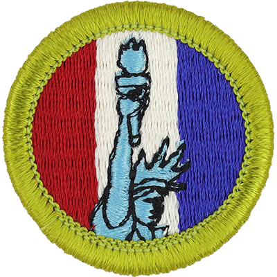
American Heritage
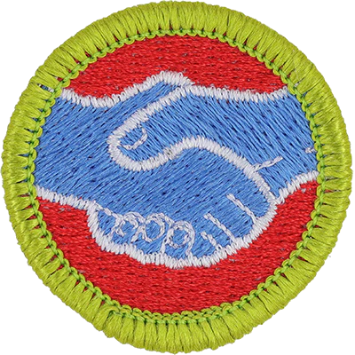
American Labor
Scouts learn about American history while working on the American Heritage merit badge. Topics covered range from the Declaration of Interdependence, to the history of the US flag, to historic places, to their own family history. They also learn about careers related to the study of American heritage.While working on the American Labor merit badge, Scouts learn about the rights of workers and the importance of labor relations. They investigate topics such as hours of work, wages, and working conditions.
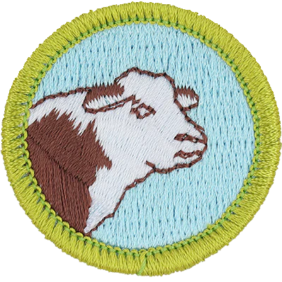
Animal Science
Working on the requirements for the Animal Science merit badge helps Scouts understand how to identify and care for various breeds of livestock. The requirements for this badge can be completed by studying beef cattle, dairy animals, horses, sheep, hogs, or avian breeds. Scouts also investigate career opportunities related to animal science.
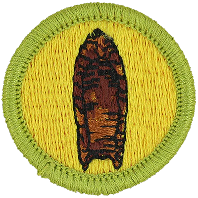
Archaeology
By doing the requirements for the Archaeology merit badge, Scouts find out how sites and artifacts from the past help us develop a more accurate picture of how our ancestors lived. They learn about the laws and regulations which protect archaeological sites. They do some hands-on research and explore careers related to archaeology.
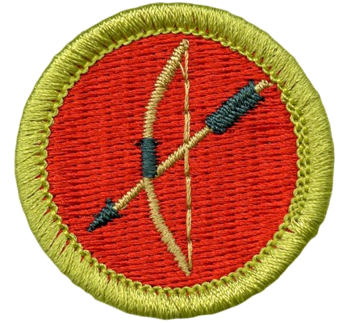
Archery
While working on the requirements for the Archery merit badge, Scouts learn range safety rules. They also familiarize themselves with archery equipment and discover how to maintain it. Then they demonstrate their archery skills using a recurve bow, a longbow, or a compound bow.
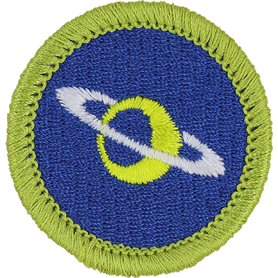
Astronomy
Scouts who are doing the requirements for the Astronomy merit badge learn about telescopes, binoculars, light pollution, planets, stars, and constellations. They visit a planetarium, spend some time observing the sky, or host a star party. They also explore careers related to astronomy.
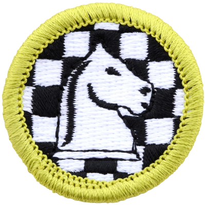
Chess
Scouts develop their critical thinking and strategy skills while doing the requirements for the Chess merit badge. They learn the history of chess, and chess notation. Scouts familiarize themselves with the tactics, board, pieces, and moves. Then they demonstrate their skills by playing some games of chess.
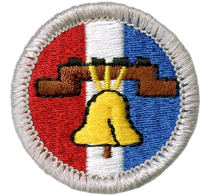
Citizenship in the Nation
Scouts working on the Citizenship in the Nation merit badge learn about the rights, duties, and obligations of United States citizens. They explore important places in our nation and learn to keep up with national events. They also investigate the importance of documents like the Declaration of Independence, the Constitution, and the Bill of Rights. Scouts also find out about the branches of our federal government and how they compliment and balance each other.
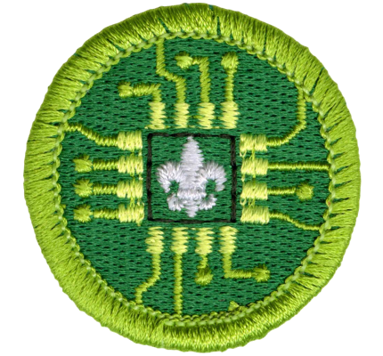
Digital Technology
Scouts learn how digital information is stored and transmitted while working on the Digital Technology merit badge. They explore how digital technology has changed over the years. They also investigate the practical aspects of digital technology and explore careers in the field.
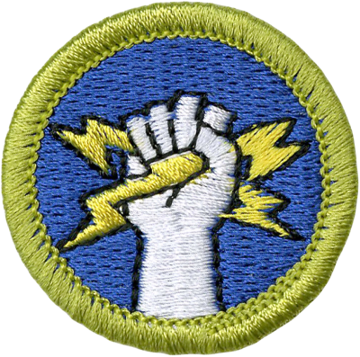
Electricity
While doing the requirements for the Electricity merit badge, Scouts learn about the many uses of electricity, including electromagnets, batteries, home lighting, motors, and more. They find out how to safely use electricity and avoid hazards. Scouts get some hands on experience with some simple electric circuits and devices.
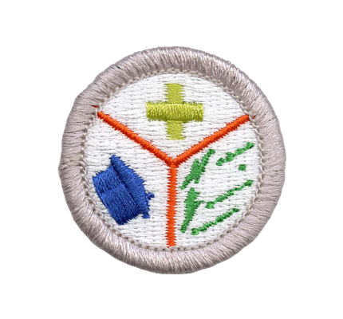
Emergency Preparedness
Scouts learn how to “Be Prepared” while working on the Emergency Preparedness merit badge. They learn how to deal with situations like fires, automobile crashes, natural disasters, home emergencies, water safety, and more. They learn about community readiness plans for emergencies and explore the many careers related to emergency preparedness.
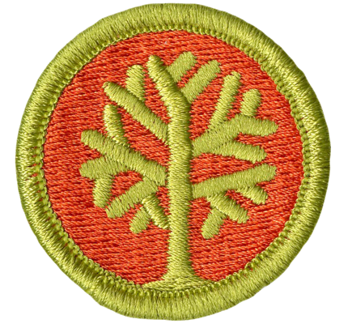
Genealogy
Scouts working on the Genealogy merit badge learn about their family heritage. They explore the many ways to research information about their ancestors and where they came from. Scouts will appreciate their family history and learn how this can lead them to delve deeper into their cultural roots.